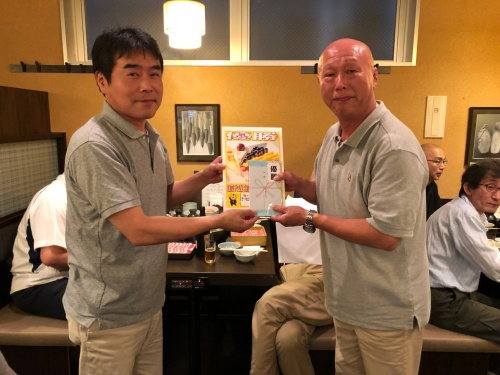

2019年「地本ボウリング大会」開催！

優勝は播磨屋さん！（中野駅）
2019年6月22日、東京地本は池袋ハイパーレーンおいて、恒例の地本ボウリング大会を開催しました。
26名の参加で、好プレー・珍プレーも飛び出すなか、熱戦が繰り広げられました。
2ゲームの合計スコアで争われた結果、首位には同点で中野駅の播磨屋さんと飯田橋駅の田口さんが並びました。ジャンケンの結果、播磨屋さんが見事優勝の栄冠に輝きました。

ボウリング大会のあとは、すき焼き・しゃぶしゃぶ食べ放題の「鍋ぞう」で表彰式＆懇親会が行われ懇親を深めました。最後に来年の奮闘を約束して終了しました。
播磨屋さん、おめでとうございます。参加された皆さんおつかれさまでした。